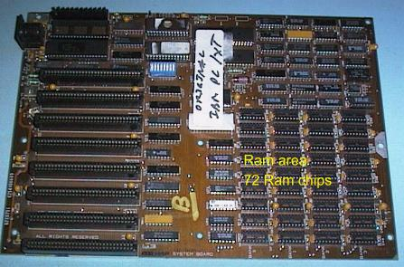

Phil Storrs PC Hardware book
First generation PC/XT hardware
System Boards
The first hardware we will look at is the system board out of an original IBM PC. The PC and PC/XT computers used the 8088 processor chip with its 16 bit internal data bus, eight bit external data bus, and 20 bit address bus. The bus connectors are called the PC/XT bus or eight bit bus.

The system board out of on original IBM PC/XT computer.


Video Cards - These computers were available with a choice of two types of Video system
The CGA (Colour Graphics Adaptor) video system provided a colour display with a maximum resolution of 640 by 200 and with from two to 16 colours, depending on the resolution. This card provided four "TTL" video signals to a colour monitor. There were the red, green, blue and intensity video signals, and horizontal and vertical sync signals.
The MDA (Mono Display Adaptor) provided a 720 by 360 resolution character only monochrome display. This card provided two "TTL" video signals and two sync. signals to the monitor.
Memory Expansion boards
The Intel Above Board provided more memory to the PC/XT type computer as Expanded Memory. Each Above Board could provide up to 2Meg byte of Expanded memory.
The Intel Above Board was an attempt in 1984 to provide more memory for the PC/XT type computer. As the 8088 processor only had a 20 bit address bus, the PC/XT computer could only address one Meg of memory. This limitation was overcome by technology developed by Lotus, Intel and Microsoft, and the name given to it was simply LIM or the EMS, for Expanded Memory Specification. Expanded memory was made available to applications that were aware of it using hardware called an Above Board. Extra memory was made available by switching small "chunks" of memory in and out of a 64K "page frame" in the one Meg address space available to the 8088 processor.
I/O cards
The Input/Output (I/O) functions were originally provided by individual cards. Here is an example of a floppy disk drive interface card.

This card is an example of a card providing two I/O functions, one Serial Port and one Parallel Port.
A common board fitted to the early PC/XT computers was the Multi Function card. This board was called by one manufacturer, a Six Pack. This card provided up to 384K of extra RAM memory, (required because early system boards could only accommodate 256K of RAM), Serial Port (and sometimes two Serial Ports), Parallel Port, Games Port and Real Time Clock.
The Multi I/O card used in later PC/XT computers provides the Floppy Disk Drive Interface, one or two Serial Ports, Parallel Port, Games Port and a Real Time Clock.
Second generation PC/XT boards
The PC/XT technology stayed current for many years and once "clone" PC/XT computers became available, they evolved through several generations. Here is a typical "final generation" PC/XT type system board.
Here is a typical Dual Mode Video card used in the last generation of PC/XT type computer. This card could operate in CGA or MDA video modes.
This Video Card was usually teamed up with an I/O card that provided, Floppy Drive Interface, Serial Port (with a second one as an option), Parallel Port, Games Port, and a battery backed up Real Time Clock (RTC). Often a BIOS Extension ROM provided support for the RTC and for 80 track, 3.5 inch Floppy Disk Drives.

Floppy Disk Drives
The floppy disk drives used in these early PC computers are often called "full height" drives. Before long floppy drives were made half the height, and are called "half height" drives.
Hard Disk Drives
The PC/XT type computer used an ST506 hard drive interface to connect the hard drive to the computers bus. Here is a PC/XT ST506 hard drive interface card. This interface required two cables between the interface card and the hard drive. The 34 wire cable was "daisy chained" if two drives were fitted, and each drive required its own 20 wire cable.
An ST506 interface Hard Drive.


Copyright © Phil. Storr, last updated 26th December 1998